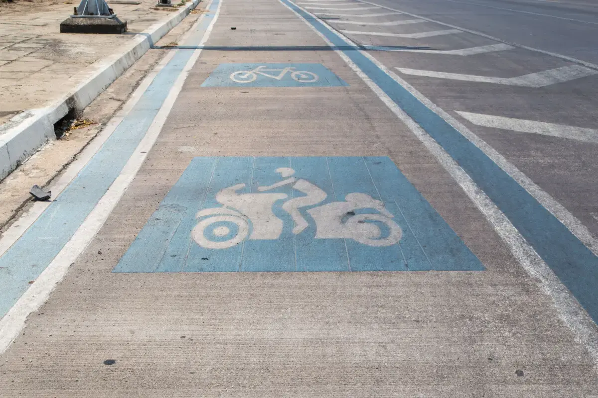

No voy en auto, voy en moto
¿Cuál es el medio de transporte favorito de los brasileños?
¿Cuál es el medio de transporte favorito de los brasileños?

El 2024 trajo muchas cosas nuevas, en Brasil un cambio histórico en la forma de movilizarse. Cada país tiene su medio de transporte favorito, por ejemplo, si viajas a Países Bajos verás miles y miles de bicicletas.
Paulo Marchetti, nuestro Country Managing Director, nos cuenta este fenómeno en Brasil y qué papel juega Compara.
Por primera vez en la historia, Brasil finalizará el año 2024 con un número de matriculaciones de motocicletas superior al de automóviles. Este hecho marca un hito en el panorama de la movilidad en el país y refleja una transformación progresiva en los hábitos de transporte de la población brasileña.
El crecimiento de este mercado tiene sus raíces en las regiones rurales y menos favorecidas económicamente, donde la motocicleta comenzó a sustituir la locomoción tradicional basada en animales. Con el tiempo, este medio de transporte se expandió hacia las grandes ciudades, principalmente entre las clases más humildes. Su bajo costo inicial, facilidad de mantenimiento y versatilidad la convirtieron en una opción accesible para millones de personas.
El auge de los servicios de entrega, como los vinculados al comercio electrónico y la comida a domicilio, ha sido un factor clave en el aumento de la flota de motocicletas en Brasil. Las motocicletas no solo se han convertido en una herramienta de transporte, sino en un medio de trabajo esencial para miles de trabajadores informales.
Por otro lado, durante la pandemia de COVID-19, la venta de automóviles experimentó un aumento significativo debido a las restricciones de circulación y la necesidad de transporte privado. Sin embargo, una vez finalizadas las restricciones, el aumento en la cantidad de automóviles contribuyó al empeoramiento del tráfico urbano y a un incremento en el tiempo de desplazamiento.

La clase media, afectada por el aumento del costo de mantenimiento de los automóviles, la implementación de restricciones vehiculares y las dificultades asociadas al estacionamiento en las grandes ciudades, comenzó a adoptar las motocicletas como una alternativa viable. Esta transición también ha sido facilitada por el surgimiento de aseguradoras especializadas que ahora ofrecen seguros para motocicletas, reduciendo el riesgo percibido de adquirir este tipo de vehículos.
Uno de los desafíos históricos asociados al uso de motocicletas en Brasil ha sido el alto índice de accidentes. Para mitigar este problema, varias ciudades han comenzado a implementar carriles exclusivos para motocicletas. Estas medidas han demostrado ser efectivas, reduciendo significativamente el número de accidentes en las vías donde se aplican.
En este contexto de crecimiento, Compara ha destacado como un actor clave en la expansión del mercado de seguros para motocicletas. La empresa ha experimentado un crecimiento significativo, ampliando su red de socios estratégicos y ofreciendo soluciones tanto para clientes nuevos como para los actuales.
Un segmento en auge incluye a aquellos propietarios de automóviles que han adquirido motocicletas como segundo vehículo y ahora buscan proteger ambos medios de transporte.
Compara ha sabido responder a estas necesidades, brindando un servicio integral que combina conveniencia, confianza y precios competitivos.
La combinación de factores económicos, sociales y estructurales ha impulsado de manera relevante el mercado de motocicletas en Brasil. El aumento del costo de los automóviles, el crecimiento de los servicios de entrega, la mayor accesibilidad al seguro de motocicletas y las mejoras en infraestructura vial para estos vehículos sugieren que esta tendencia no se revertirá a corto plazo.
En 2024, la preferencia por las motocicletas no solo refleja una respuesta pragmática a los desafíos de movilidad urbana, sino también una transformación estructural en el mercado de transporte brasileño. Con el apoyo continuo de políticas públicas y del sector privado, incluyendo actores como Compara, es probable que las motocicletas continúen desempeñando un papel central en la movilidad del país.
Un increíble repaso de lo que fue la evolución de las motos en Brasil. Gracias Pablo por esto. Nos queda la pregunta si en Chile esto sucederá en algún momento o si el transporte privado por excelencia seguirán siendo los autos.
Estos interrogantes nos llevan a plantearnos muchas más preguntas y a su vez imaginarnos si, por ejemplo, las scooters tomaran estos lugares de favoritismo y practicidad. El 2025 nos dirá si ya se vislumbra una nueva tendencia o no. Mientras tanto, no olviden asegurar sus autos, un consejo de amigo a amigo.
 Finanzas
FinanzasSi últimamente has abierto LinkedIn, probablemente lo has visto: parece que todos hablan del “futuro del trabajo”.
 Finanzas
FinanzasChile no está en el Mundial 2026. Ya lo sabemos, ya dolió, ya hicimos memes tristes y nos resignamos a ver la Copa del Mundo desde la casa.
 Finanzas
FinanzasHace casi dos años me vine a vivir a Italia y llegué con una idea muy instalada en la cabeza: que todo iba a ser mucho más caro que en…